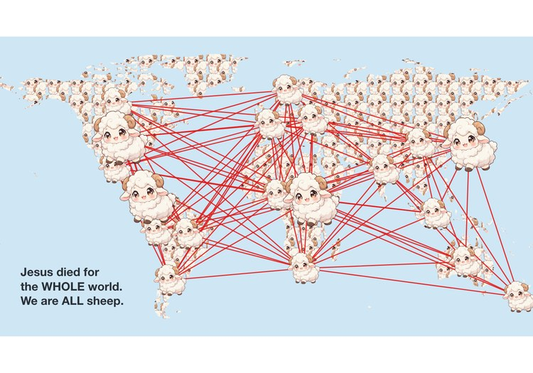

ELL Teaching Moment
A ten-minute lesson for adult English language learners — five language groups in one room, some fluent, some at almost no English.

The Problem
One room, five languages
I teach English each week to adult learners. The room holds Japanese, Spanish, Ukrainian and Arabic speakers, and the spread of ability is severe — some follow a normal conversation, others lose the thread partway through a single sentence.
That rules out the usual approach. Anything built on reading leaves half the room behind, and anything built on talking leaves the other half behind. The lesson had to carry its meaning before anyone read a word.
The Approach
Pictures first, words second. Every slide leads with an image. The vocabulary attaches to something the learner has already understood, rather than the other way round.
One idea per screen. Three words for the whole lesson — sheep, shepherd, protect — each with a single sentence showing it in use. Four words learned properly beats eight half-learned.
Every word in four languages. Japanese, Spanish, Ukrainian and Arabic sit under each term, with romanisation where the script is unfamiliar. Nobody has to wait for a translation.
Doing, not listening. Call-and-response, point-at-the-picture, this-or-that questions. Pointing counts as answering — which matters when a learner can understand far more than they can yet say.
The Map
The part that does the work
The centrepiece is an interactive world map. Learners tap their own country and it turns into a sheep; each new country draws a line to the others, and a web builds across the room's origins.
Countries are coloured in primary colours only — red, blue, yellow, green, orange, purple — so a beginner can name the colour out loud. The same palette repeats in Central America and East Africa, because the two regions are far enough apart that “the red country” is never ambiguous. The map pinches and pans, so a country a few pixels wide is still reachable.
One button then turns every landmass on earth into sheep and connects the continents across every ocean — the closing image of the lesson.
Built
Hand-written HTML, CSS and JavaScript in a single file, with no framework and no build step. Country geometry is projected from Natural Earth data into inline SVG, so the whole lesson runs with no network connection — a requirement, not a flourish, in a building whose wifi I do not control.
A fixed 16:9 stage scales to any screen, and on-screen controls replace every keyboard shortcut so the lesson can be run from a phone and mirrored to a TV.